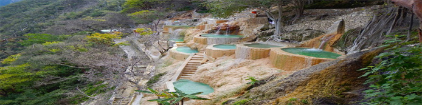
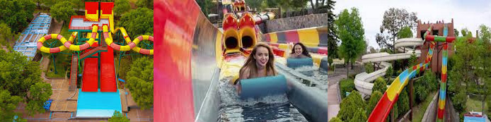

SIGUIENTE FECHA
PROXIMOS VIAJES
VIAJES DE TEMPORADA
GRUTAS DE TOLANTONGO

Disfruta uno de los escenarios naturales más impresionantes del estado de Hidalgo donde un río y una serie de pozas te harán sentir como en el mismísimo Edén.
¡Descubre las escondidas Aguas Termales y Grutas de Tolantongo!
Las grutas Tolantongo se encuentran ubicadas en San Cristóbal, Cardonal, Hidalgo...
PARQUE ACUATICO TEPETONGO

Un parque acuático que ofrece atractivos para todas las edades. La familia o los amigos podrán disfrutar de los toboganes, alberca de olas, espacios para relajarse y preparar carne asada. Una buena oportunidad para salir de la ciudad y despejarse de las actividades diarias.